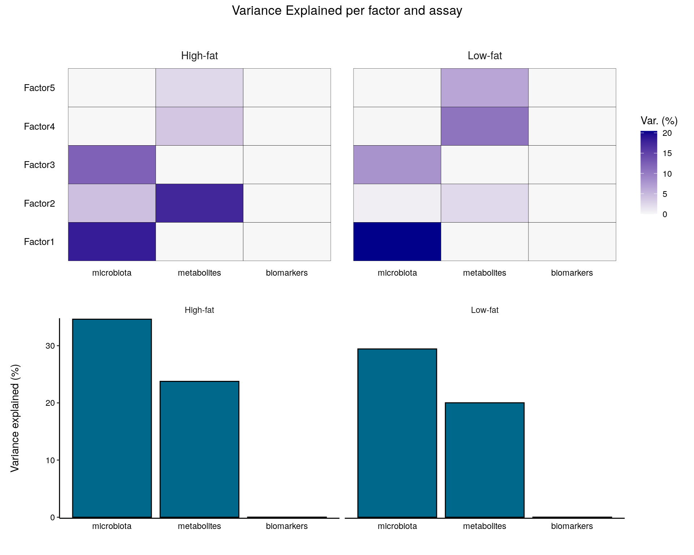
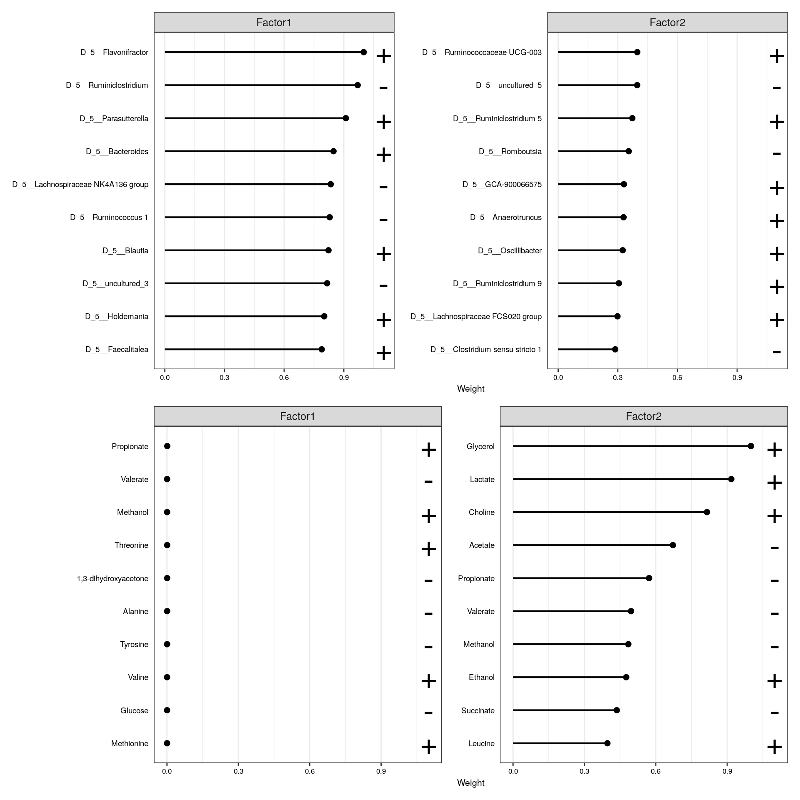

21 Ordination-based multiassay analysis
In this chapter, we continue from where we left off in the previous section (referenced as Section 20.1). Specifically, we introduce an analytical method called Multi-Omics Factor Analysis. This method is described as “ordination-based,” meaning it involves techniques that reduce the dimensionality of the data while preserving as much variability as possible. Ordination methods are often used in multivariate analysis to visualize patterns, trends, and relationships in complex data sets, making them particularly useful for multi-omics data where multiple types of biological data are integrated and analyzed together.
See Chapter 14 for more information on ordination methods.
21.1 Multi-Omics Factor Analysis
Multi-Omics Factor Analysis (MOFA) is an unsupervised method for integrating multi-omic data sets in a downstream analysis (Argelaguet 2018). It could be seen as a generalization of principal component analysis. Yet, with the ability to infer a latent (low-dimensional) representation, shared among the multiple (-omics) data sets in hand.
We use the R MOFA2 package for the analysis, and install the corresponding dependencies.
The mae object could be used straight to create the MOFA model. Yet, we transform our assays since the model assumes normality per default, and Gaussian model is recommended (see MOFA2 FAQ). However, Poisson and Bernoulli distribution models are also offered.
Note that duplicates, such as “uncultured”, might appear when aggregating the microbiome data by a taxonomic rank. To check for duplicates, run any(duplicated(rownames(mae[[1]]))). If it returns TRUE, then the duplicates are present. We can add rownames(mae[[1]]) <- getTaxonomyLabels(mae[[1]], make.unique=TRUE) to remove them.
library(MOFA2)
# For simplicity, classify all high-fat diets as high-fat, and all the low-fat
# diets as low-fat diets
colData(mae)$Diet <- ifelse(
colData(mae)$Diet == "High-fat" | colData(mae)$Diet == "High-fat + XOS",
"High-fat", "Low-fat")
# Agglomerate microbiome data
mae[[1]] <- agglomerateByPrevalence(mae[[1]], rank = "Genus")
# Transforming microbiome data with clr and by scaling
mae[[1]] <- transformAssay(mae[[1]], method = "clr", pseudocount = TRUE)
mae[[1]] <- transformAssay(
mae[[1]], assay.type = "clr", method = "standardize", MARGIN = "rows")
# Transforming metabolomic data with log10 and by scaling
mae[[2]] <- transformAssay(mae[[2]], assay.type = "nmr", method = "log10")
mae[[2]] <- transformAssay(
mae[[2]], assay.type = "log10", method = "standardize")
# Transforming biomarker data by scaling
mae[[3]] <- transformAssay(
mae[[3]], assay.type = "signals", method = "standardize", MARGIN = "rows")
# Removing the assays no longer needed
assays(mae[[1]]) <- assays(mae[[1]])["standardize"]
assays(mae[[2]]) <- assays(mae[[2]])["standardize"]
assays(mae[[3]]) <- assays(mae[[3]])["standardize"]
# Building our mofa model
model <- create_mofa_from_MultiAssayExperiment(
mae,
groups = "Diet",
extract_metadata = TRUE)
model
## Untrained MOFA model with the following characteristics:
## Number of views: 3
## Views names: microbiota metabolites biomarkers
## Number of features (per view): 112 38 39
## Number of groups: 2
## Groups names: High-fat Low-fat
## Number of samples (per group): 20 20
## Model options can be defined as follows:
model_opts <- get_default_model_options(model)
model_opts$num_factors <- 5
model_opts |> head()
## $likelihoods
## microbiota metabolites biomarkers
## "gaussian" "gaussian" "gaussian"
##
## $num_factors
## [1] 5
##
## $spikeslab_factors
## [1] FALSE
##
## $spikeslab_weights
## [1] FALSE
##
## $ard_factors
## [1] TRUE
##
## $ard_weights
## [1] TRUETraining options for the model are defined in the following way:
train_opts <- get_default_training_options(model)
train_opts |> head()
## $maxiter
## [1] 1000
##
## $convergence_mode
## [1] "fast"
##
## $drop_factor_threshold
## [1] -1
##
## $verbose
## [1] FALSE
##
## $startELBO
## [1] 1
##
## $freqELBO
## [1] 5The model is then prepared with prepare_mofa() and trained with run_mofa():
model <- prepare_mofa(
object = model,
model_options = model_opts
)
# Some systems may require the specification `use_basilisk = TRUE`
# so it has been added to the following code
model <- run_mofa(model, use_basilisk = TRUE)
##
## #########################################################
## ### __ __ ____ ______ ###
## ### | \/ |/ __ \| ____/\ _ ###
## ### | \ / | | | | |__ / \ _| |_ ###
## ### | |\/| | | | | __/ /\ \_ _| ###
## ### | | | | |__| | | / ____ \|_| ###
## ### |_| |_|\____/|_|/_/ \_\ ###
## ### ###
## #########################################################
##
##
##
## use_float32 set to True: replacing float64 arrays by float32 arrays to speed up computations...
##
## Successfully loaded view='microbiota' group='High-fat' with N=20 samples and D=112 features...
## Successfully loaded view='microbiota' group='Low-fat' with N=20 samples and D=112 features...
## Successfully loaded view='metabolites' group='High-fat' with N=20 samples and D=38 features...
## Successfully loaded view='metabolites' group='Low-fat' with N=20 samples and D=38 features...
## Successfully loaded view='biomarkers' group='High-fat' with N=20 samples and D=39 features...
## Successfully loaded view='biomarkers' group='Low-fat' with N=20 samples and D=39 features...
##
##
## Model options:
## - Automatic Relevance Determination prior on the factors: True
## - Automatic Relevance Determination prior on the weights: True
## - Spike-and-slab prior on the factors: False
## - Spike-and-slab prior on the weights: False
## Likelihoods:
## - View 0 (microbiota): gaussian
## - View 1 (metabolites): gaussian
## - View 2 (biomarkers): gaussian
##
##
##
##
## ######################################
## ## Training the model with seed 42 ##
## ######################################
##
##
## ELBO before training: -38460.42
##
## Iteration 1: time=0.00, ELBO=-11274.06, deltaELBO=27186.360 (70.68659170%), Factors=5
## Iteration 2: time=0.00, Factors=5
## Iteration 3: time=0.00, Factors=5
## Iteration 4: time=0.00, Factors=5
## Iteration 5: time=0.00, Factors=5
## Iteration 6: time=0.00, ELBO=-9939.68, deltaELBO=1334.375 (3.46947657%), Factors=5
## Iteration 7: time=0.00, Factors=5
## Iteration 8: time=0.00, Factors=5
## Iteration 9: time=0.00, Factors=5
## Iteration 10: time=0.00, Factors=5
## Iteration 11: time=0.00, ELBO=-9863.77, deltaELBO=75.913 (0.19737939%), Factors=5
## Iteration 12: time=0.00, Factors=5
## Iteration 13: time=0.00, Factors=5
## Iteration 14: time=0.00, Factors=5
## Iteration 15: time=0.00, Factors=5
## Iteration 16: time=0.00, ELBO=-9832.74, deltaELBO=31.036 (0.08069500%), Factors=5
## Iteration 17: time=0.00, Factors=5
## Iteration 18: time=0.00, Factors=5
## Iteration 19: time=0.00, Factors=5
## Iteration 20: time=0.00, Factors=5
## Iteration 21: time=0.00, ELBO=-9801.57, deltaELBO=31.161 (0.08102186%), Factors=5
## Iteration 22: time=0.00, Factors=5
## Iteration 23: time=0.00, Factors=5
## Iteration 24: time=0.00, Factors=5
## Iteration 25: time=0.00, Factors=5
## Iteration 26: time=0.00, ELBO=-9793.82, deltaELBO=7.757 (0.02016822%), Factors=5
## Iteration 27: time=0.00, Factors=5
## Iteration 28: time=0.00, Factors=5
## Iteration 29: time=0.00, Factors=5
## Iteration 30: time=0.00, Factors=5
## Iteration 31: time=0.00, ELBO=-9790.66, deltaELBO=3.159 (0.00821374%), Factors=5
## Iteration 32: time=0.00, Factors=5
## Iteration 33: time=0.00, Factors=5
## Iteration 34: time=0.00, Factors=5
## Iteration 35: time=0.00, Factors=5
## Iteration 36: time=0.00, ELBO=-9788.54, deltaELBO=2.119 (0.00550859%), Factors=5
## Iteration 37: time=0.00, Factors=5
## Iteration 38: time=0.00, Factors=5
## Iteration 39: time=0.00, Factors=5
## Iteration 40: time=0.00, Factors=5
## Iteration 41: time=0.00, ELBO=-9786.85, deltaELBO=1.692 (0.00439837%), Factors=5
## Iteration 42: time=0.00, Factors=5
## Iteration 43: time=0.00, Factors=5
## Iteration 44: time=0.00, Factors=5
## Iteration 45: time=0.00, Factors=5
## Iteration 46: time=0.00, ELBO=-9785.32, deltaELBO=1.528 (0.00397286%), Factors=5
## Iteration 47: time=0.00, Factors=5
## Iteration 48: time=0.00, Factors=5
## Iteration 49: time=0.00, Factors=5
## Iteration 50: time=0.00, Factors=5
## Iteration 51: time=0.00, ELBO=-9783.93, deltaELBO=1.390 (0.00361446%), Factors=5
## Iteration 52: time=0.00, Factors=5
## Iteration 53: time=0.00, Factors=5
## Iteration 54: time=0.00, Factors=5
## Iteration 55: time=0.00, Factors=5
## Iteration 56: time=0.00, ELBO=-9782.78, deltaELBO=1.147 (0.00298238%), Factors=5
## Iteration 57: time=0.00, Factors=5
## Iteration 58: time=0.00, Factors=5
## Iteration 59: time=0.00, Factors=5
## Iteration 60: time=0.00, Factors=5
## Iteration 61: time=0.00, ELBO=-9781.88, deltaELBO=0.903 (0.00234912%), Factors=5
## Iteration 62: time=0.00, Factors=5
## Iteration 63: time=0.00, Factors=5
## Iteration 64: time=0.00, Factors=5
## Iteration 65: time=0.00, Factors=5
## Iteration 66: time=0.00, ELBO=-9781.15, deltaELBO=0.733 (0.00190536%), Factors=5
## Iteration 67: time=0.00, Factors=5
## Iteration 68: time=0.00, Factors=5
## Iteration 69: time=0.00, Factors=5
## Iteration 70: time=0.00, Factors=5
## Iteration 71: time=0.00, ELBO=-9780.52, deltaELBO=0.622 (0.00161814%), Factors=5
## Iteration 72: time=0.00, Factors=5
## Iteration 73: time=0.00, Factors=5
## Iteration 74: time=0.00, Factors=5
## Iteration 75: time=0.00, Factors=5
## Iteration 76: time=0.00, ELBO=-9779.98, deltaELBO=0.546 (0.00142075%), Factors=5
## Iteration 77: time=0.00, Factors=5
## Iteration 78: time=0.00, Factors=5
## Iteration 79: time=0.00, Factors=5
## Iteration 80: time=0.00, Factors=5
## Iteration 81: time=0.00, ELBO=-9779.49, deltaELBO=0.489 (0.00127231%), Factors=5
## Iteration 82: time=0.00, Factors=5
## Iteration 83: time=0.00, Factors=5
## Iteration 84: time=0.00, Factors=5
## Iteration 85: time=0.00, Factors=5
## Iteration 86: time=0.00, ELBO=-9779.04, deltaELBO=0.446 (0.00116022%), Factors=5
## Iteration 87: time=0.00, Factors=5
## Iteration 88: time=0.00, Factors=5
## Iteration 89: time=0.00, Factors=5
## Iteration 90: time=0.00, Factors=5
## Iteration 91: time=0.00, ELBO=-9778.63, deltaELBO=0.412 (0.00107075%), Factors=5
## Iteration 92: time=0.00, Factors=5
## Iteration 93: time=0.00, Factors=5
## Iteration 94: time=0.00, Factors=5
## Iteration 95: time=0.00, Factors=5
## Iteration 96: time=0.00, ELBO=-9778.25, deltaELBO=0.384 (0.00099829%), Factors=5
## Iteration 97: time=0.00, Factors=5
## Iteration 98: time=0.00, Factors=5
## Iteration 99: time=0.00, Factors=5
## Iteration 100: time=0.00, Factors=5
## Iteration 101: time=0.00, ELBO=-9777.89, deltaELBO=0.362 (0.00094041%), Factors=5
## Iteration 102: time=0.00, Factors=5
## Iteration 103: time=0.00, Factors=5
## Iteration 104: time=0.00, Factors=5
## Iteration 105: time=0.00, Factors=5
## Iteration 106: time=0.00, ELBO=-9777.54, deltaELBO=0.343 (0.00089062%), Factors=5
## Iteration 107: time=0.00, Factors=5
## Iteration 108: time=0.00, Factors=5
## Iteration 109: time=0.00, Factors=5
## Iteration 110: time=0.00, Factors=5
## Iteration 111: time=0.00, ELBO=-9777.22, deltaELBO=0.327 (0.00085053%), Factors=5
## Iteration 112: time=0.00, Factors=5
## Iteration 113: time=0.00, Factors=5
## Iteration 114: time=0.00, Factors=5
## Iteration 115: time=0.00, Factors=5
## Iteration 116: time=0.00, ELBO=-9776.90, deltaELBO=0.314 (0.00081733%), Factors=5
## Iteration 117: time=0.00, Factors=5
## Iteration 118: time=0.00, Factors=5
## Iteration 119: time=0.00, Factors=5
## Iteration 120: time=0.00, Factors=5
## Iteration 121: time=0.00, ELBO=-9776.60, deltaELBO=0.303 (0.00078783%), Factors=5
## Iteration 122: time=0.00, Factors=5
## Iteration 123: time=0.00, Factors=5
## Iteration 124: time=0.00, Factors=5
## Iteration 125: time=0.00, Factors=5
## Iteration 126: time=0.00, ELBO=-9776.30, deltaELBO=0.294 (0.00076567%), Factors=5
## Iteration 127: time=0.00, Factors=5
## Iteration 128: time=0.00, Factors=5
## Iteration 129: time=0.00, Factors=5
## Iteration 130: time=0.00, Factors=5
## Iteration 131: time=0.00, ELBO=-9776.02, deltaELBO=0.286 (0.00074251%), Factors=5
## Iteration 132: time=0.00, Factors=5
## Iteration 133: time=0.00, Factors=5
## Iteration 134: time=0.00, Factors=5
## Iteration 135: time=0.00, Factors=5
## Iteration 136: time=0.00, ELBO=-9775.74, deltaELBO=0.281 (0.00073046%), Factors=5
## Iteration 137: time=0.00, Factors=5
## Iteration 138: time=0.00, Factors=5
## Iteration 139: time=0.00, Factors=5
## Iteration 140: time=0.00, Factors=5
## Iteration 141: time=0.00, ELBO=-9775.46, deltaELBO=0.277 (0.00071921%), Factors=5
## Iteration 142: time=0.00, Factors=5
## Iteration 143: time=0.00, Factors=5
## Iteration 144: time=0.00, Factors=5
## Iteration 145: time=0.00, Factors=5
## Iteration 146: time=0.00, ELBO=-9775.19, deltaELBO=0.272 (0.00070694%), Factors=5
## Iteration 147: time=0.00, Factors=5
## Iteration 148: time=0.00, Factors=5
## Iteration 149: time=0.00, Factors=5
## Iteration 150: time=0.00, Factors=5
## Iteration 151: time=0.00, ELBO=-9774.92, deltaELBO=0.270 (0.00070197%), Factors=5
## Iteration 152: time=0.00, Factors=5
## Iteration 153: time=0.00, Factors=5
## Iteration 154: time=0.00, Factors=5
## Iteration 155: time=0.00, Factors=5
## Iteration 156: time=0.00, ELBO=-9774.65, deltaELBO=0.268 (0.00069757%), Factors=5
## Iteration 157: time=0.00, Factors=5
## Iteration 158: time=0.00, Factors=5
## Iteration 159: time=0.00, Factors=5
## Iteration 160: time=0.00, Factors=5
## Iteration 161: time=0.00, ELBO=-9774.38, deltaELBO=0.267 (0.00069391%), Factors=5
## Iteration 162: time=0.00, Factors=5
## Iteration 163: time=0.00, Factors=5
## Iteration 164: time=0.00, Factors=5
## Iteration 165: time=0.00, Factors=5
## Iteration 166: time=0.00, ELBO=-9774.12, deltaELBO=0.266 (0.00069097%), Factors=5
## Iteration 167: time=0.00, Factors=5
## Iteration 168: time=0.00, Factors=5
## Iteration 169: time=0.00, Factors=5
## Iteration 170: time=0.00, Factors=5
## Iteration 171: time=0.00, ELBO=-9773.85, deltaELBO=0.265 (0.00068801%), Factors=5
## Iteration 172: time=0.00, Factors=5
## Iteration 173: time=0.00, Factors=5
## Iteration 174: time=0.00, Factors=5
## Iteration 175: time=0.00, Factors=5
## Iteration 176: time=0.00, ELBO=-9773.59, deltaELBO=0.265 (0.00068873%), Factors=5
## Iteration 177: time=0.00, Factors=5
## Iteration 178: time=0.00, Factors=5
## Iteration 179: time=0.00, Factors=5
## Iteration 180: time=0.00, Factors=5
## Iteration 181: time=0.00, ELBO=-9773.33, deltaELBO=0.263 (0.00068332%), Factors=5
## Iteration 182: time=0.00, Factors=5
## Iteration 183: time=0.00, Factors=5
## Iteration 184: time=0.00, Factors=5
## Iteration 185: time=0.00, Factors=5
## Iteration 186: time=0.00, ELBO=-9773.06, deltaELBO=0.262 (0.00068149%), Factors=5
## Iteration 187: time=0.00, Factors=5
## Iteration 188: time=0.00, Factors=5
## Iteration 189: time=0.00, Factors=5
## Iteration 190: time=0.00, Factors=5
## Iteration 191: time=0.00, ELBO=-9772.80, deltaELBO=0.259 (0.00067342%), Factors=5
## Iteration 192: time=0.00, Factors=5
## Iteration 193: time=0.00, Factors=5
## Iteration 194: time=0.00, Factors=5
## Iteration 195: time=0.00, Factors=5
## Iteration 196: time=0.00, ELBO=-9772.55, deltaELBO=0.257 (0.00066771%), Factors=5
## Iteration 197: time=0.00, Factors=5
## Iteration 198: time=0.00, Factors=5
## Iteration 199: time=0.00, Factors=5
## Iteration 200: time=0.00, Factors=5
## Iteration 201: time=0.00, ELBO=-9772.30, deltaELBO=0.253 (0.00065654%), Factors=5
## Iteration 202: time=0.00, Factors=5
## Iteration 203: time=0.00, Factors=5
## Iteration 204: time=0.00, Factors=5
## Iteration 205: time=0.00, Factors=5
## Iteration 206: time=0.00, ELBO=-9772.05, deltaELBO=0.247 (0.00064343%), Factors=5
## Iteration 207: time=0.00, Factors=5
## Iteration 208: time=0.00, Factors=5
## Iteration 209: time=0.00, Factors=5
## Iteration 210: time=0.00, Factors=5
## Iteration 211: time=0.00, ELBO=-9771.81, deltaELBO=0.241 (0.00062637%), Factors=5
## Iteration 212: time=0.00, Factors=5
## Iteration 213: time=0.00, Factors=5
## Iteration 214: time=0.00, Factors=5
## Iteration 215: time=0.00, Factors=5
## Iteration 216: time=0.00, ELBO=-9771.57, deltaELBO=0.233 (0.00060504%), Factors=5
## Iteration 217: time=0.00, Factors=5
## Iteration 218: time=0.00, Factors=5
## Iteration 219: time=0.00, Factors=5
## Iteration 220: time=0.00, Factors=5
## Iteration 221: time=0.00, ELBO=-9771.35, deltaELBO=0.222 (0.00057816%), Factors=5
## Iteration 222: time=0.00, Factors=5
## Iteration 223: time=0.00, Factors=5
## Iteration 224: time=0.00, Factors=5
## Iteration 225: time=0.00, Factors=5
## Iteration 226: time=0.00, ELBO=-9771.14, deltaELBO=0.213 (0.00055305%), Factors=5
## Iteration 227: time=0.00, Factors=5
## Iteration 228: time=0.00, Factors=5
## Iteration 229: time=0.00, Factors=5
## Iteration 230: time=0.00, Factors=5
## Iteration 231: time=0.00, ELBO=-9770.94, deltaELBO=0.202 (0.00052452%), Factors=5
## Iteration 232: time=0.00, Factors=5
## Iteration 233: time=0.00, Factors=5
## Iteration 234: time=0.00, Factors=5
## Iteration 235: time=0.00, Factors=5
## Iteration 236: time=0.00, ELBO=-9770.75, deltaELBO=0.190 (0.00049300%), Factors=5
## Iteration 237: time=0.00, Factors=5
## Iteration 238: time=0.00, Factors=5
## Iteration 239: time=0.00, Factors=5
## Iteration 240: time=0.00, Factors=5
## Iteration 241: time=0.00, ELBO=-9770.57, deltaELBO=0.178 (0.00046309%), Factors=5
##
## Converged!
##
##
##
## #######################
## ## Training finished ##
## #######################
##
##
## Saving model in /tmp/RtmpcbDybm/mofa_20241006-070020.hdf5...The explained variance is visualized with the plot_variance_explained() function.
library(patchwork)
library(ggplot2)
plot_list <- plot_variance_explained(
model,
x = "view", y = "factor",
plot_total = TRUE)
wrap_plots(plot_list, nrow = 2) +
plot_annotation(
title = "Variance Explained per factor and assay",
theme = theme(plot.title = element_text(hjust = 0.5)))
From the plot, we can observe that the microbiota accounts for most of the variability in the data. Biomarkers do not significantly explain the variability. The variability in the microbiota is primarily captured in factors 1 and 2, while metabolites are primarily represented in factor 2.
We can then visualize the top weights for microbiota and metabolites for the first two factors to analyze co-varying features.
plot_list <- lapply(
c("microbiota", "metabolites"),
plot_top_weights,
object = model,
factors = c(1, 2),
nfeatures = 10
)
wrap_plots(plot_list, ncol = 1) & theme(text = element_text(size = 8))
From the visualization, we can see that glycerol, lactate, and choline are positively associated with factor 2, while acetate is negatively associated among the metabolites. In terms of microbiota, Ruminococcaceae and Ruminodostridium, for instance, are positively associated with the same factor. This indicates that these features co-vary in the data, suggesting a positive association with glycerol, lactate, and choline, and a negative association with acetate and these microbes.
More tutorials and examples of using the package are found at MOFA2 tutorials.